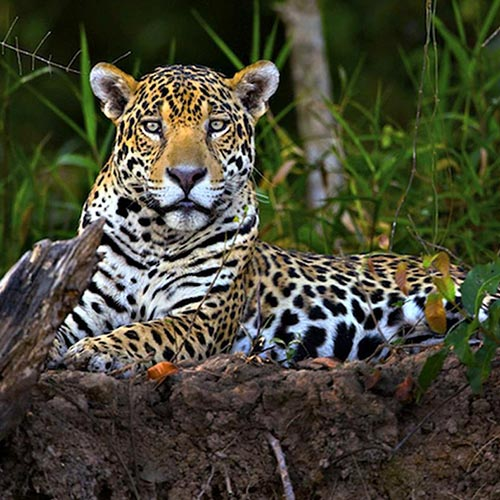

Jaguar
El jaguar, es el felino más grande de América y el tercero en el mundo (después del león y el tigre), es también el único representante del género Panthera encontrado en este continente, habita desde lugares casi desérticos como el Desierto de Arizona o el altiplano mexicano hasta selvas tropicales como el Amazonas.